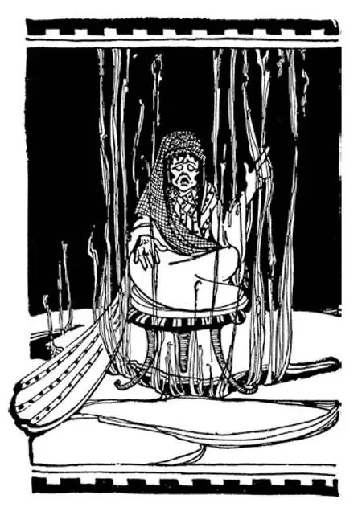

19
A Surprise Party
遭到突袭的宴会

WHEN I was a boy I was always told, and you have probably been told the same thing:
“You can have no dessert until you have eaten your dinner.”
No matter whether I was hungry or not, “No dinner, no dessert.” This was a rule that my father said was “like the laws of the Medes and Persians.”
I didn't know then who the Medes and Persians were, but I know now that they were two Indo-European peoples living next to Babylon—you remember Nebuchadnezzar had married a Median woman—and that they were governed by laws, which were fixed so hard and fast and were so unchangeable, that we still speak of any such thing that does not change as like “the laws of the Medes and Persians.”
The Medes and the Persians had a religion, which was neither like that of the Jews nor like that of the Babylonians. It had been started by a Persian named Zoroaster, who was a wise man like Solomon. Zoroaster went about among the people, teaching them wise sayings and hymns. These wise sayings have been gathered into a book. Zoroaster taught that there were two great spirits in the world, the Good Spirit and the Bad Spirit.
The Good Spirit, he said was Light, and the Bad Spirit Darkness. The Good or Light he called Mazda. The Persians kept a fire constantly burning on their altar. They thought the Good Spirit burned in the fire, and they had men watch over the flame to see that it never went out. These men who watched the flame were called Magi, and they were supposed to be able to do all sorts of wonderful things, so that we call such wonderful things magic , and the people who are able to do them we call magicians . At the time of this story which I'm telling you, the ruler of the Medes and the Persians was a great king named Cyrus.
But before I go on with this story, I must tell you about a little country not far from Troy. This little country was called Lydia. Perhaps you may know a girl named Lydia. I do. Lydia was ruled over by a king named Croesus, who was the richest man in the world. When we want to describe a man as very wealthy, we still say he is “as rich as Croesus.”
Croesus owned nearly all the gold mines, of which there were a great many in that country, and besides this he collected money in the form of taxes from all the cities near him.
Before the time of Croesus, people did not have money such as we have now. When they wished to buy anything, they simply traded something they had for something they wanted—so many eggs for a pound of meat or so much wine for a pair of sandals. To buy anything expensive, such as a horse, they paid with a lump of gold or silver, which was weighed in the scales to see just how heavy it was. It is hard for us to think how people could get along without cents and nickels, dimes, quarters and dollars—with no money at all—and yet they did.
Croesus, in order to make things simpler, cut up his gold into small bits. Now, it was not easy for everyone to weigh each piece each time it was traded, for he might not have any scales handy. So Croesus had each piece weighed and stamped with its weight and with his name or initials to show that he guaranteed the weight. These pieces of gold and silver were only lumps with Croesus's seal pressed into them, but they were probably the first real money even though they were not round and beautifully engraved like our coins.
Now, Cyrus, the great Persian king, thought he would like to own this rich country of Lydia with all its gold mines, so he set out to conquer it.
When Cyrus was on the way, Croesus sent in a hurry to the oracle in Greece to ask what was going to happen and who was going to win. You will remember what I said about the oracle at Delphi and how people used to ask the oracle questions—to have their fortunes told, as some people still do today.
The oracle replied to Croesus's question:
“A great kingdom shall fall.”
Croesus was delighted, for he thought the oracle meant that Cyrus's kingdom would fall. The oracle was right, but not in the way Croesus had thought.
A great kingdom did fall, but it was his own kingdom of Lydia and not Cyrus's that fell.
But Cyrus was still not satisfied with the capture of Lydia, and so at last he attacked Babylon.

Delphic oracle （德尔菲的神谕）
Now, the people in Babylon who thought of nothing but pleasure were busy feasting and drinking and having a good time. Why should they worry about Cyrus? Their city had walls that were so high and thick and was protected by such strong gates of brass that it seemed as if no one could possibly have captured it.
But you remember that the Euphrates River ran beneath the walls and crossed right through the city. Well, one night when the young prince of Babylon named Belshazzar was having a party and enjoying himself, feeling quite certain that no one could enter the city, Cyrus made a dam and turned the waters of the river to one side. Then Cyrus's army marched into the city through the dry riverbed and captured the surprised Babylonians without even a fight. It is supposed that some of the Babylonian priests helped him to do this and even opened the gates, for Babylon had become so wicked that they thought it time for it to be destroyed.
Old Lycurgus would have said, “I told you so. People who think of nothing but pleasure never come to a good end.”
This surprise party was in 538—5 and 3 are 8.
Two years later Cyrus let the Jews, who had been carried away fifty years before from Jerusalem, return to the home of their fathers, thus ending the Babylonian Captivity.
Today the only thing left of this great city of Babylon—Babylon the Wicked, Babylon the Magnificent, Babylon with all its great walls and brass gates and Hanging Gardens—is a mound of earth.
【中文阅读】
“吃完饭才能吃甜点。”
我小的时候，大人们总是这样告诉我，你可能也听过同样的话吧。
不管我饿不饿，“不吃饭，不许吃甜点。”我父亲说这条规定，就像米堤亚人和波斯人的法律，是不可更改的。
那时候我不知道米堤亚人和波斯人到底是什么人，但是现在我知道了，他们是生活在巴比伦附近的两个印欧语系的民族——你还记得尼布甲尼撒娶了一个米堤亚的女人吧——我不知道两个民族的生活都由法律管理，这些法律制定得非常严格明确，而且不可变更，所以我们现在说到没法改变的事，还把它比作“米堤亚人和波斯人的法律”。
米堤亚人和波斯人信仰的宗教既不同于犹太人，也不同于巴比伦人，这种宗教是由一个名叫琐罗亚斯德的波斯人开创的，他是一个像所罗门那样的智者。琐罗亚斯德到各地群众中去，教给他们箴言和赞美诗。这些箴言已经被汇编成书。琐罗亚斯德教导说，世界上有两种伟大的灵——善灵和恶灵。
他说善灵代表光明，而恶灵则代表黑暗，他把善灵或光明之神称为胡腊玛达。 波斯人让他们的祭坛上的火长燃不灭，他们认为善灵就在火里燃烧，所以，他们派专人守护防止火苗熄灭。守护火苗的人被称为“麦佳” ［1］ ，据说他们能做各种神奇的事，所以我们今天把那些神奇的事叫做“魔法”，能做神奇之事的人叫“魔法师” ［2］ 。下面我要讲个故事，在这个故事发生的时候，米堤亚人和波斯人的统治者是个伟大的国王，名叫居鲁士。
不过，在我讲这个故事之前，我必须和你们说说离特洛伊不远的一个小国。这个小国叫吕底亚。这名字和常见的女孩名“莉迪娅”很像吧。我就认识一个叫莉迪娅的女孩。吕底亚由一位名叫克洛伊索斯的国王统治，当时，他是世界上最富有的人。我们现在想形容某个人非常富有，我们还会说他“像克洛伊索斯一样富有”。
吕底亚王国有很多的金矿，而几乎所有的金矿都属于克洛伊索斯，除此以外，他还以征税的名义向附近所有的城市收取钱财。
在克洛伊索斯时代以前，人们没有我们现在用的这类货币。他们想要买什么东西的时候，就只有用已有的东西去交换想要的东西——多少枚鸡蛋可以换一磅肉，或是多少磅酒可以换一双鞋。要买什么昂贵的东西，比如一匹马，他们就付一块金子或银子，当然，先得用天平称一下这块金子或银子看有多重。我们今天，很难想象没有一分、五分、一角、二十五分和一美元那样的硬币和纸币——根本没有钱——人们怎么过日子，但是，他们却这样过下来了。
为了让买卖更简易，克洛伊索斯把金子分割成了小块。当时，每个人每次做交易都把每块金子称一下是很麻烦的，因为他身边可能连秤都没有。克洛伊索斯就叫人先把每小块金子都过了秤，并把称过的重量和他的名字或名字的首字母都压印在金块上，表明他保证这块金子的重量真实可信。这些打着克洛伊索斯印记的金块、银块，尽管不是圆形的，也不像我们今天的钱币那样雕刻着精美的图案，却很可能是世界上第一批真正的货币。
现在，要说到居鲁士了，这位伟大的波斯国王觉得自己很想拥有这个富庶的、到处是金矿的吕底亚，于是他就出兵攻打吕底亚。
居鲁士的大军还在途中，克洛伊索斯急忙派人去希腊询问神谕会发生什么事情、最终谁会赢。你们可能还记得我给你们说过这个德尔菲的神谕，还讲过人们过去怎样找神谕寻求答案——想要知道自己的命运如何，现在有些人还这样做呢。
神谕是这样回答克洛伊索斯的问题的：
“一个伟大的王国将会毁灭。”
克洛伊索斯很高兴，因为他觉得神谕的意思是居鲁士的王国将要灭亡。神谕确实说中了，但不是克洛伊索斯所想的那样。
的确有个伟大的王国崩溃了，但这个王国却是他自己的吕底亚王国，而不是居鲁士的王国。
但是，占领吕底亚后，居鲁士并没有就此满足，之后他又进攻了巴比伦。
除了享乐什么也不想的巴比伦人，这时还在忙着大吃大喝和纵情享受。他们为什么要担心居鲁士？他们的城墙那么高、那么厚，还有那么坚固的黄铜大门保护着，看上去好像没有人能攻占这座城市。
不过，你们还记得吧，幼发拉底河从城墙下流过，正好穿过巴比伦城。一天夜里，巴比伦年轻王子伯沙撒确信没人能进得了这座城市，又在举办宴会，尽情玩乐。趁着这个时候，居鲁士派人筑起一个水坝，把河水引向另一边。然后，他的军队沿着已干涸的河床进入了巴比伦城，没动干戈就俘虏了惊慌失措的巴比伦人。据推测，一些巴比伦的祭司做了居鲁士的内应，甚至还为他的军队打开了城门，因为巴比伦变得如此堕落，他们觉得该是让它毁灭的时候了。
如果斯巴达那位来库古还活着，他一定会说：“我早已告诉过你们：一心只想着享乐的人从来都不会有好下场的。”
这场遭到突袭的宴会发生在公元前538年——5加3等于8，很好记吧？
两年后，居鲁士释放了五十年前从耶路撒冷被掳来的犹太人，让他们回到了自己祖先的家园，从而结束了那段“巴比伦之囚”的时期。
今天，巴比伦这座伟大的城市——那个邪恶的巴比伦，那个辉煌的巴比伦，那个有着巨大城墙和黄铜城门以及空中花园的巴比伦——剩下的只是一大堆土。